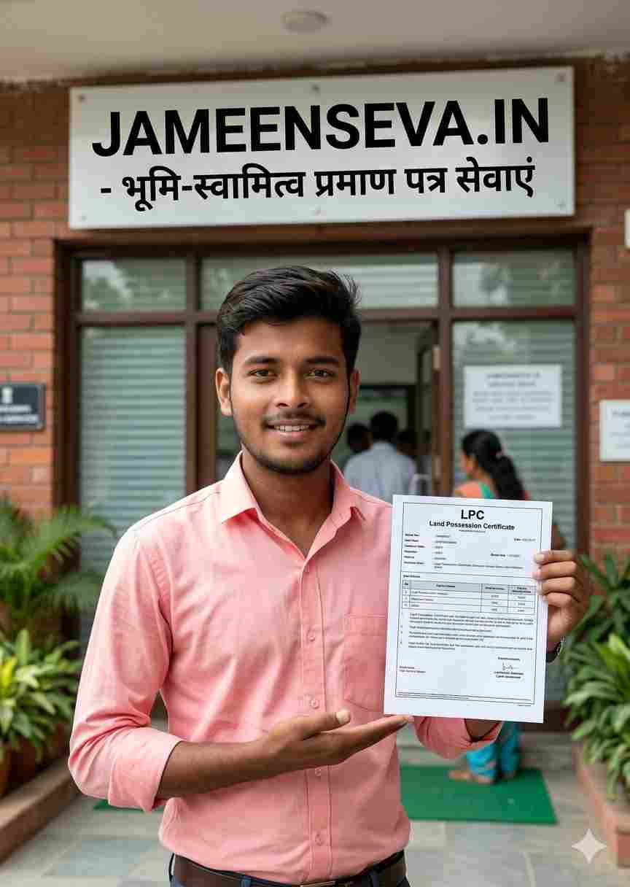

बिहार राज्य में राजस्व एवं भूमि सुधार विभाग (Department of Revenue and Land Reforms) द्वारा नागरिकों एवं किसानों के लिए डिजिटलीकरण की दिशा में कई क्रांतिकारी कदम उठाए गए हैं। इनमें से सबसे प्रमुख और आवश्यक दस्तावेज है LPC (Land Possession Certificate) यानी भू-स्वामित्व प्रमाण पत्र। यदि आप बिहार में खेती करते हैं, बैंक से KCC (Kisan Credit Card) ऋण प्राप्त करना चाहते हैं, सरकारी योजनाओं में सब्सिडी का लाभ लेना चाहते हैं या भूमि का कानूनी सत्यापन प्रस्तुत करना चाहते हैं, तो LPC आपके पास होना अनिवार्य है।
वर्ष 2026 में बिहार सरकार ने LPC निर्गत करने की पूरी प्रक्रिया को शत-प्रतिशत ऑनलाइन और पारदर्शी बना दिया है। हालांकि, हजारों आवेदकों के आवेदन छोटी-छोटी गलतियों—जैसे जमाबंदी पोर्टल पर अपडेट न होना, पुराणी लगान रसीद अपलोड करना, या खाता-खेसरा-रकबा विवरण में त्रुटि होना—के कारण अंचल अधिकारी (CO) स्तर पर खारिज (Reject) कर दिए जाते हैं। इस विस्तृत गाइड में हम LPC से जुड़ी हर एक शर्त, पात्रता, ऑनलाइन आवेदन प्रक्रिया, स्टेटस चेक, डाउनलोड और रिजेक्शन से बचने के अचूक उपायों पर विस्तार से चर्चा करेंगे।

चित्र: बिहार भू-स्वामित्व प्रमाण पत्र (LPC) ऑनलाइन पोर्टल एवं आवेदन प्रक्रिया
LPC एक आधिकारिक कानूनी दस्तावेज है जो संबंधित अंचल (Block/Tehsil) के अंचल अधिकारी (Circle Officer - CO) द्वारा जारी किया जाता है। यह इस बात का अंतिम और आधिकारिक प्रमाण है कि बिहार राज्य के भीतर स्थित किसी विशिष्ट मौजा, खाता, खेसरा (प्लॉट संख्या) और रकबा की जमीन पर वर्तमान समय में किस व्यक्ति का वास्तविक भौतिक कब्जा (Physical Possession) और स्वामित्व अधिकार है।
अक्सर देखा गया है कि लोग ऑनलाइन लगान रसीद (Lagan Receipt) को ही भू-स्वामित्व का पूर्ण प्रमाण मान लेते हैं, जो कि तकनीकी और कानूनी रूप से गलत है:
बिहार में ऑनलाइन LPC आवेदन करने से पहले आपकी जमीन के अभिलेखों का निम्नलिखित 4 शर्तों को पूरा करना 100% अनिवार्य है। यदि इनमें से एक भी शर्त अधूरी है, तो आपका फॉर्म ऑनलाइन रिजेक्ट कर दिया जाएगा:
आपकी जमीन की जमाबंदी (Jamabandi/Register-2) बिहार सरकार के अधिकारिक पोर्टल (biharbhumi.bihar.gov.in) पर ऑनलाइन डिजिटाइज्ड और पब्लिश होनी चाहिए। यदि आपकी जमाबंदी केवल पुराने कागजी रजिस्टर-2 में है और इंटरनेट पर शो नहीं हो रही है, तो आप ऑनलाइन LPC के लिए आवेदन नहीं कर सकते। ऐसे मामलों में पहले परिमार्जन प्लस (Parimarjan Plus) के जरिए ऑफलाइन जमाबंदी को पोर्टल पर ऑनलाइन अपडेट (Digitize) करवाना अनिवार्य है।
LPC आवेदन की दूसरी सबसे बड़ी शर्त यह है कि आपकी जमीन का लगान (टैक्स) वर्तमान वित्तीय वर्ष तक पूरी तरह चुकता होना चाहिए। उदाहरण के लिए, यदि आप वर्ष 2026 में आवेदन कर रहे हैं, तो आपकी लगान रसीद वर्ष 2025-2026 या 2026-2027 तक अपडेट कटी होनी चाहिए। पुराणी या बकाया (Arrears) रसीद अपलोड करने पर अंचल अधिकारी तुरंत आवेदन निरस्त कर देते हैं।
डिजिटल जमाबंदी में आपका खाता संख्या (Khata Number), खेसरा संख्या (Plot Number), कुल रकबा (एकर/डिसमिल में) और चौहद्दी (उत्तर, दक्षिण, पूर्व, पश्चिम के पड़ोसियों के नाम) एकदम सटीक दर्ज होना चाहिए। यदि ऑनलाइन जमाबंदी में खाता/खेसरा शून्य (0) दिख रहा है या रकबा गायब है, तो पहले परिमार्जन द्वारा विवरण सुधारें, तभी LPC स्वीकृत होगा।
LPC हमेशा उसी व्यक्ति के नाम से आसानी से जारी होता है जिसके नाम पर ऑनलाइन जमाबंदी कायम है। यदि जमाबंदी आपके दादा या पिता के नाम से है जो स्वर्गवासी हो चुके हैं, तो आपको स्वयं के नाम से दाखिल-खारिज (Mutation) करवाकर नई जमाबंदी कायम करनी चाहिए, या फिर आवेदन के साथ वैध वंशावली (Genealogy Certificate) संलग्न करनी होगी।
बिहार में कृषि कार्य एवं भूमि संबंधी प्रशासनिक कार्यों में LPC एक रीढ़ की हड्डी की तरह काम करता है:
| क्र.सं. | क्षेत्र / योजना | LPC का विशिष्ट उपयोग |
|---|---|---|
| 1 | KCC (किसान क्रेडिट कार्ड) ऋण | राष्ट्रीयकृत एवं ग्रामीण बैंकों द्वारा 3 लाख तक का कृषि ऋण जारी करने हेतु अनिवार्य। |
| 2 | सरकारी कृषि सब्सिडी | ट्रैक्टर, थ्रेशर, बोरिंग, एवं ड्रिप सिंचाई यंत्रों पर 50% से 80% सब्सिडी प्राप्त करने हेतु। |
| 3 | फसल सहायता एवं क्षतिपूर्ति | बाढ़, सुखाड़ या ओलावृष्टि होने पर राज्य सरकार द्वारा आपदा राहत राशि सीधे DBT खाते में पाने के लिए। |
| 4 | पैक्स (PACS) धान/गेहूँ अधिप्राप्ति | सरकारी दर (MSP) पर अपनी फसल पैक्स या व्यापार मंडल में बेचने के लिए रैयत के रूप में पंजीकरण। |
| 5 | न्यायालयीन एवं पुलिस कार्य | जमानत (Bail Bonds) भरने हेतु अचल संपत्ति का कानूनी साक्ष्य प्रस्तुत करने के लिए। |
| 6 | भूमि अधिग्रहण एवं मुआवजा | NHAI, रेलवे या एक्सप्रेसवे निर्माण में अधिग्रहित जमीन का सरकारी मुआवजा क्लेम करने हेतु। |
आवेदन करते समय आपके पास निम्नलिखित दस्तावेजों की स्पष्ट स्कैन कॉपी (PDF फ़ॉर्मेट में, 2 MB से कम साइज) होनी चाहिए:
यदि आपकी जमाबंदी ऑनलाइन अपडेट है और करंट रसीद कटी हुई है, तो आप नीचे दिए गए चरणों का पालन करके स्वयं LPC ऑनलाइन अप्लाई कर सकते हैं:
सबसे पहले अपने ब्राउज़र में बिहार सरकार की आधिकारिक वेबसाइट biharbhumi.bihar.gov.in खोलें। होमपेज पर दिए गए "ऑनलाइन एल० पी० सी० आवेदन करें" बटन पर क्लिक करें। यदि आपका अकाउंट नहीं है तो 'Registration' बटन दबाकर मोबाइल नंबर, ईमेल और एड्रेस भरकर नया यूजर अकाउंट बनाएं और लॉगिन करें।
लॉगिन करने के बाद स्क्रीन पर ड्रॉप-डाउन मेनू खुलेगा। यहाँ अपनी जमीन से संबंधित जिला (District) और अंचल (Circle/Block) का चयन करें और "नया एल० पी० सी० आवेदन करें" विकल्प पर क्लिक करें।
अब अपने क्षेत्र का हल्का (Halka) और मौजा (Mouza) चुनें। जमीन को खोजने के लिए आपके पास कई विकल्प होंगे—जैसे: खाता नंबर से, खेसरा नंबर से, जमाबंदी संख्या से, या रैयत के नाम से। अपनी सही जमाबंदी खोजकर उसके सामने बने "चयन करें (Select)" लिंक पर क्लिक करें।
जमाबंदी का पूरा ब्योरा स्क्रीन पर आ जाएगा। यहाँ "Proceed for LPC" पर क्लिक करें। इसके बाद आवेदक का नाम, पिता का नाम, संबंध, पूरा पता, आधार संख्या, मोबाइल नंबर और LPC आवेदन का मुख्य उद्देश्य (जैसे- KCC Loan, Subsidy, or Legal) दर्ज करें।
पोर्टल से LPC Affidavit फॉर्मेट डाउनलोड करें, उसका प्रिंट निकालकर भरें और हस्ताक्षर करके Scan करें। इसके बाद शपथ पत्र और करंट लगान रसीद की PDF फाइल अपलोड करें। अंत में Captcha कोड दर्ज करके "Final Submit" पर क्लिक करें। आपको एक Application Number (आवेदन संख्या) प्राप्त होगी, जिसे सुरक्षित नोट कर लें।
आवेदन सबमिट होने के बाद आपका फॉर्म अंचल कार्यालय में निम्नलिखित तीन प्रशासनिक स्तरों से होकर गुजरता है:
| जांच स्तर | जिम्मेदार अधिकारी | कार्रवाई एवं सत्यापन कार्य |
|---|---|---|
| प्रथम चरण | राजस्व कर्मचारी (Halka Karmchari) | रजिस्टर-2 से मिलान, भूमि पर भौतिक कब्जे की स्थल जांच (Field Visit) एवं रिपोर्ट तैयार करना। |
| द्वितीय चरण | अंचल निरीक्षक (CI - Circle Inspector) | कर्मचारी की जांच रिपोर्ट, रसीद और शपथ पत्र की समीक्षा कर CO को संस्तुति (Recommend) करना। |
| तृतीय चरण | अंचल अधिकारी (CO - Circle Officer) | अंतिम स्वीकृति प्रदान करना और अपने डिजिटल सिग्नेचर (DSC) से LPC सर्टिफिकेट जारी करना। |
आवेदन करने के बाद आप घर बैठे अपने मोबाइल से स्टेटस ट्रैक कर सकते हैं:
यदि आपका LPC आवेदन निरस्त हो जाता है, तो घबराएं नहीं। कारण जानकर उसे सुधारें:
यदि आपकी जमाबंदी ऑनलाइन नहीं दिख रही, रसीद नहीं कट रही, या पुराने खतियान/केवाला की मूल कॉपी चाहिए—तो JameenSeva.in आपकी पूरी मदद करेगा!
सरकारी सहायता सेवा हेतु आवेदन करें →उत्तर: बिहार लोक सेवाओं के अधिकार (RTPS) अधिनियम के अनुसार, LPC आवेदन जमा होने के 10 से 15 कार्यदिवसों (Working Days) के भीतर निर्गत कर दिया जाता है।
उत्तर: नहीं, बिहार भूमि पोर्टल पर LPC का ऑनलाइन आवेदन पूरी तरह से निःशुल्क (Free of Cost) है। आपको केवल अपनी लगान रसीद का बकाया टैक्स जमा करना होता है।
उत्तर: बिल्कुल नहीं! ऑनलाइन LPC के लिए जमाबंदी का डिजिटल होना और ऑनलाइन पोर्टल पर शो होना अनिवार्य है।
उत्तर: हाँ, आप biharbhumi.bihar.gov.in पर एप्लीकेशन नंबर डालकर सीधे अपने स्मार्टफोन में PDF फॉर्मेट में LPC डाउनलोड और प्रिंट कर सकते हैं।
बिहार में अपनी संपत्ति की सुरक्षा, KCC लोन प्राप्त करने और सरकारी कृषि योजनाओं का सीधा लाभ उठाने के लिए LPC (भू-स्वामित्व प्रमाण पत्र) एक अनिवार्य और शक्तिशाली दस्तावेज है। यदि आपकी जमीन की जमाबंदी ऑनलाइन अपडेट है और लगान रसीद चुकता है, तो आप बिना किसी बिचौलिए के स्वयं भी कुछ ही मिनटों में ऑनलाइन आवेदन कर सकते हैं। अपनी जमीन के सभी पुराने कागजात (खतियान, केवाला, रजिस्टर-2) हमेशा सुरक्षित और अद्यतन रखें। भूमि संबंधी किसी भी सहायता हेतु JameenSeva.in सदैव आपके साथ है।